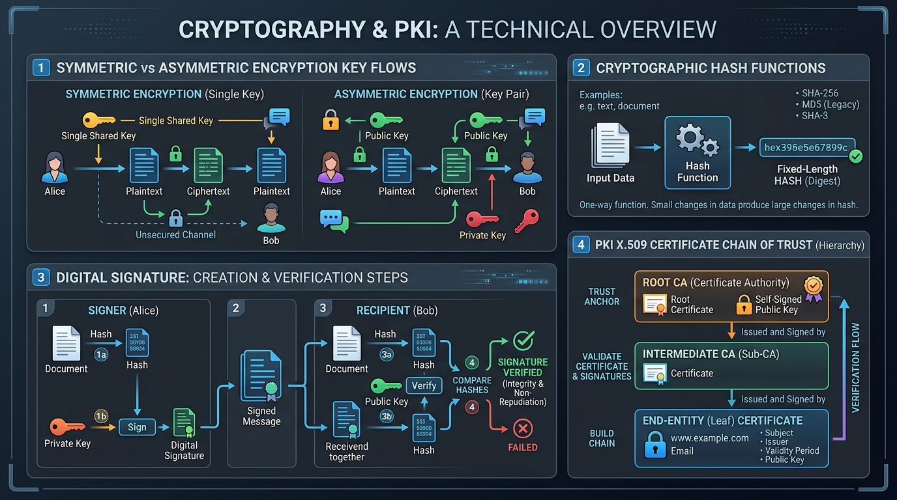

Master secret-key encryption (AES), public-key cryptography (RSA, Diffie-Hellman), cryptographic hash functions (SHA-256), and HMAC data integrity.
In Symmetric Encryption, the **SAME secret key** is used for both encryption and decryption.
In Asymmetric Encryption, two mathematically linked keys are used: a **Public Key** (shared openly) and a **Private Key** (kept secret).
The Diffie-Hellman (DH / ECDHE) key exchange algorithm allows two parties to securely negotiate a shared secret symmetric key over an insecure, eavesdropped public channel without sending the key itself!
A Cryptographic Hash Function is a one-way mathematical function that converts an arbitrary length input string into a fixed-length string of hex digits (the hash digest).
Common standards: SHA-256 (Secure Hash Algorithm), SHA-3, MD5 (deprecated due to collision vulnerabilities), and HMAC (Hash-based Message Authentication Code) which combines a secret key with a hash function for integrity & authenticity.

| Feature | Symmetric Encryption | Asymmetric Encryption |
|---|---|---|
| Key Usage | 1 Shared Secret Key | 2 Keys (Public Key & Private Key) |
| Speed & Efficiency | Extremely Fast (High throughput) | Slow (100x to 1000x slower computationally) |
| Key Distribution | Difficult (How to send secret key securely?) | Easy (Public key shared openly with anyone) |
| Resource Requirement | Low CPU & RAM requirements | High CPU & RAM overhead |
| Primary Use Case | Bulk payload encryption (TLS data streams, disk storage) | Key Exchange, Digital Signatures, TLS Handshake |
| Typical Key Sizes | 128 bits, 256 bits (AES) | 2048 to 4096 bits (RSA), 256 bits (ECC) |